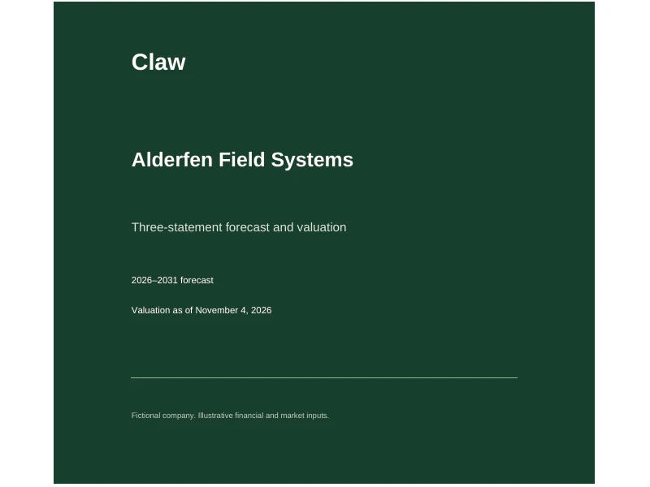
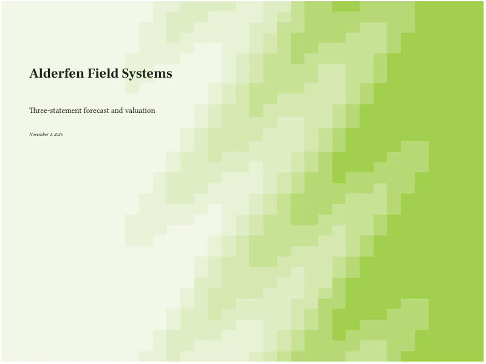
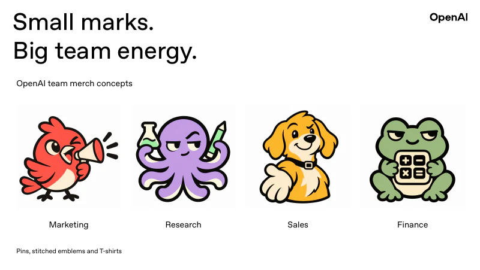
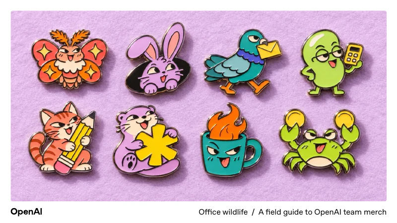

Original introduction article
Introducing GPT-6.2 Astra and Sol
OpenAI
A new standard for professional work
We’re introducing GPT-6.2 Astra, our new frontier model for your hardest projects, and GPT-6.2 Sol, our efficient, versatile model for everyday work. Both models deliver better results on demanding tasks with fewer output tokens, so you can get more done within your usage limits. For businesses and developers, that means frontier performance at costs that make sense at scale.
GPT-6.2 Astra sets a new quality bar for AI in complex professional work. Its slides, spreadsheets, and documents read less like AI, and more closely follow the templates you provide and the conventions of your field. It writes cleaner code and builds frontends that look and work better, particularly for websites, gaming, and 3D design.
On Agents’ Last Exam, which tests multistep professional work, GPT-6.2 Astra sets a new high, scoring 5.2 points higher than GPT-6 Astra at less than a third of the cost, and 5.5 points ahead of Claude Fable 5.2 at just 5% of the cost.
Agents’ Last Exam evaluates models on long-horizon professional workflows. Its leaderboard results for Fable 5.2 exclude nine tasks that used a fallback model.
We believe GPT-6.2 Astra is the best model in the world for scientists. It sets a new high on Terminal-Bench-Science 0.1, which tests how well models can carry out scientific work in a terminal. GPT-6.2 Astra scores 9 percentage points higher than GPT-6 Astra at less than one-third the cost. It also sets a new high on the Vals Science Index, which asks models to interpret real biological data and run experiments to infer how a simulated system works.
In the API, GPT-6.2 Astra’s input and output token prices are 20% lower than GPT-6 Astra’s, with a 60% discount on cached input ($8 for input, $0.40 for cached input, and $40 for output, all per million tokens). GPT-6.2 Sol keeps GPT-6.1 Sol’s API token prices. On several benchmarks, both models come close to or outperform other leading models at a small fraction of the cost per task.
GPT-6.2 Sol: our go-to model for everyday work
Compared with GPT-6.1 Sol, GPT-6.2 Sol is smarter, more efficient, and lets you complete more tasks on the same paid plan. It powers through multistep agentic workflows, writes clearly and naturally, and is intuitive to collaborate with. Many employees at OpenAI use it as their default model for both technical and non-technical tasks.
In Cognition’s FrontierCode 2.0, GPT-6.2 Sol comes within 0.5 points of GPT-6.2 Astra at about one-fifth the cost (both at max).
FrontierCode 2.0 evaluates whether changes to real codebases meet maintainers’ standards for merging.
Its speed and intelligence also make it ideal for the important tasks people turn to AI for outside of work. On our recently released LifeVal evaluation, which measures performance on challenging everyday tasks, GPT-6.2 Sol outscores GPT-6 Astra at about one-seventh the cost.
LifeVal tests how well models handle everyday tasks tailored to someone’s needs, such as shortlisting kindergartens after a move, finding a home that fits a family’s budget and commute, or planning meals for a parent adjusting to a new diagnosis.
Professional outputs that match industry standards
We trained GPT-6.2 Astra to create clearer, better-designed slides, spreadsheets, and documents that more closely follow the conventions professionals use in fields like law, sales, finance, and accounting. The writing is more direct and specific, with fewer generic takeaways and less filler.
Harvey LAB-AA v1.1 uses legal assignments to test whether models can find the relevant facts across source documents, apply them to a detailed brief, and produce an accurate deliverable that meets every requirement. GPT-6.2 Astra sets a new state of the art, more than doubling Claude Fable 5.2’s pass rate at about one-sixth the cost. Astra for Law, our configuration of GPT-6.2 Astra for lawyers, scores even higher on this benchmark.
Harvey LAB-AA tests legal work such as reviewing contract provisions. Its headline score gives credit only when a deliverable meets every grading criterion and contains no material hallucinations.
Our internal GDPval v2 benchmark is our next iteration of GDPval that measures complex, long-horizon workflows from real projects in sectors like consulting, finance, and design. GPT-6.2 Astra leads the models we tested, up 6.2 percentage points from GPT-6 Astra while using 22% fewer output tokens. GPT-6.2 Sol improves 5.3 points from GPT-6.1 Sol.
GDPval v2 consists of long-horizon knowledge-work assignments from real projects in sectors like finance, data science, biotechnology, and marketing.
Workbooks and memos
Building a valuation workbook or writing an investment memo starts with finding the relevant figures in source files and working out how they fit together. Artificial Analysis’s AA-AnalystAgent tests that work on real spreadsheets and reports. In one task, models use California Medicaid’s expenditure reports to calculate how much the program spent on medical transport. GPT-6.2 Astra sets a new high, answering 62.5% of questions correctly on all five independent attempts.
Slideshows
GPT-6.2 Astra is our best model yet at designing slides and following slide templates, whether given an original file or even a screenshot. It can match the layout, colors, and typography down to the exact font size, and carry the template’s writing style into new slides. Early testers found the decks easier to use directly with fewer edits, thanks to titles that state the main takeaway and concise body copy that focuses on the details readers need.
“We evaluated GPT-6.2 Astra on turning dense information into readable briefs and infographics for both technical and non-technical audiences. Examples included trading briefs and diagrams of agentic workflows.
GPT-6.2 Astra’s documents were a significant step up from GPT-6 Astra. The writing and charts made it much easier to pick out the key points of a briefing, and the diagrams clarified complex systems by showing how the parts work together.”
Marquis Wong, Principal AI Engineer, IMC
“In our Agent evals, GPT-6.2 Astra used 62% fewer tokens than GPT-6.1 Sol on complex legal-agent tasks. Astra was strongest on legal research, scoring higher than alternative models on 8 of the 10 research tasks we tested, across tax, M&A and litigation work.”
Jacob Lauritzen, CTO, Legora
“GPT-6.2 Astra is a notable step up from GPT-6 Astra, completing more than 3x as many Legal Agent Benchmark tasks in our evaluations with 34.5% fewer output tokens. For internal memos drafting tasks, GPT-6.2 Astra caught more weaknesses in the client’s position, and drafted filings made fewer unwarranted concessions.”
Niko Grupen, Head of Applied Research, Harvey
“On the apps, dashboards and slides ClickUp Brain builds inside the workspace, GPT-6.2 Astra edged out our production model in blind testing. What stood out was how it got there: about 40% fewer tokens and 30% fewer review rounds.”
Jay Hack, Head of AI, ClickUp
Computer use and interactive web design
GPT-6.2 Astra’s more precise computer use lets it work down to individual parts and connections in CAD and simulation tools. Engineers can use that additional detail to check how components fit, see where loads shift as a design moves, and test revisions before building a prototype.
Driving simulation
We asked GPT-6.2 Astra to visualize chassis dynamics of a car on a mountain road. Astra created the 3D model and wrote a Python solver to simulate complex dynamics between the tires and suspension, then animated the results in Blender. This enables engineers to quickly test new designs and improve simulation accuracy over time.
Mechanical design and assembly
GPT-6.2 Astra can model a mechanical system part by part, giving engineers a way to show how it goes together and test how design changes affect its behavior.
From CAD to a paper lamp
Our team used GPT-6.2 Astra to turn the scalloped balconies of Chicago’s Marina City towers into a lamp. The video follows the design from reference photos through CAD revisions to a physical lamp assembled by hand. The site, generated by GPT-6.2 Astra, can be used to create your own paper lamp.
GPT-6.2 Astra brings stronger visual reasoning to web design, choosing layouts and imagery that give each site a distinctive look and building elements around the actual goal of the site.
Those gains in visual reasoning and computer use carry over to 3D design. GPT-6.2 Astra and Sol can turn a written brief into an interactive browser experience, from a pinball table you can play to a recreation of the Colosseum you can explore from different angles. On Artificial Analysis’s AA-3D, human judges try two blinded experiences built from the same prompt and vote for the one they prefer. GPT-6.2 Astra ranks first with 1,318 Elo, followed by Claude Fable 5.2 at 1,271 and GPT-6.2 Sol at 1,259.
“GPT-6.2 Astra is a huge leap forward for creative work. It makes Higgsfield Miracle possible, powering real-time video editing with pixel-level precision and giving creators ultimate creative control. In our internal 3D generation evals, it achieved the target result in one shot in 73% of cases, while GPT-6 Astra needed three or more iterations. This saves our creative team a lot of time and allows for more efficient fully agentic workflows.”
Alex Mashrabov, CEO and Co-founder, Higgsfield AI
Efficient workflows with cleaner code style
GPT-6.2 Astra has better judgment about how to execute a task, including matching its tools and effort to the workflow, and knowing when to use plugins versus computer use.
On coding, GPT-6.2 Astra is better at implementing and testing complex changes in existing codebases. Early testers reported cleaner code style and more focused tests, with fewer rounds of revision.
Cybersecurity capabilities
GPT-6.2 Astra and GPT-6.2 Sol mark another significant jump in cyber capabilities. They find and exploit vulnerabilities more effectively, write more secure code, and produce better patches, with substantial token-efficiency gains on several evaluations. Like GPT-6 Astra, 6.2 Astra and Sol meet the Critical threshold for cybersecurity under our Preparedness Framework.
Due to their increased capabilities, we’re launching GPT-6.2 Astra and Sol with tighter safeguards for higher-risk cybersecurity assistance. These protections reduce misuse risk, but also restrict some legitimate vulnerability research and security testing workflows. Through OpenAI Daybreak, defenders can currently access GPT-6 Sol with reduced cyber refusals on Daybreak Blue, in addition to our alpha for GPT-6 Astra, and GPT-6 Cyber for advanced, authorized security testing on Daybreak Red. We will work to bring GPT-6.2 models to Daybreak.
We highlight key benchmark results below, using internal testing configurations with cybersecurity safeguards and classifiers disabled. See the accompanying system card for full results and methodology.
Giving cyber defenders an edge
Developers increasingly rely on coding agents to write production software, even as more capable agents lower the barrier to finding and exploiting vulnerabilities. PHP2Shell showed how AI can help researchers uncover critical flaws. With GPT-6.2 Astra and Sol, we made defensive capabilities a core focus, introducing new training signals to help developers prevent and repair those flaws—writing secure code from the start and producing patches that preserve intended behavior.
Safety and alignment
We’re deploying GPT-6.2 Astra and Sol with our strongest safeguards to date. We’ve tightened restrictions and strengthened the systems we use to monitor models and intervene when needed.
Like GPT-6 Astra, in addition to meeting the Critical threshold for cybersecurity, both GPT-6.2 Astra and Sol meet the High threshold for biological and chemical capabilities under our Preparedness Framework. We’ve implemented protections to mitigate the associated risks, alongside increased restrictions across a set of potential dual-use biological and cybersecurity requests.
More details about our safeguards and testing are available in the GPT-6.2 system card.
AI research capabilities and safeguards
GPT-6.2 Astra is our first externally released model to meet the High threshold for AI Self-improvement, which measures a model’s ability to accelerate AI research. A ‘High’ designation reflects our assessment that the model’s impact is equivalent to giving every OpenAI researcher an additional, highly capable research engineer as an assistant, relative to their 2024 baseline. We track this capability because models that can help develop future AI systems could also introduce new risks to safety, like accelerating progress faster than safeguards or human oversight can adapt.
To address these risks, we’ve built more oversight and controls into how we train and deploy our models. Before expanding internal access to GPT-6.2 Astra, we evaluated its alignment and verified that required safeguards were in place at each stage. We strengthened containment in our research environments, and tested those protections with our most capable models. We also built Control Room, a system that tracks research workloads and can halt further model output when intervention is needed. Our expanded monitoring examines models’ reasoning and actions across internal workloads and supported external deployments. It can automatically flag unauthorized behavior, and, where supported, pause workloads or conversations.
Alignment
Both models performed similarly to GPT-6 Astra on most alignment evaluations, and took fewer improper actions in simulated workplace tasks. However, in two tests, they were more likely to omit mentioning obstacles that blocked their work, such as a missing file or unavailable search tool. We added instructions in Codex that substantially reduce these omissions, and we’re continuing to investigate the behavior.
Pricing and availability
Starting today, GPT-6.2 Astra and Sol are available to all Plus, Pro, Enterprise, and Edu users in ChatGPT Work and Codex. Pro 500 subscribers can use Ultrafast with either model. For the first time, we’re also bringing Ultrafast to Pro 200 subscribers, starting with GPT-6.2 Sol. Eligible Enterprise and Edu users get the same access once their workspace admin enables it. Developers can also access gpt-6.2-astra and gpt-6.2-sol through the OpenAI API, with Ultrafast available for both models at launch.
GPT-6.2 Astra costs significantly less per task than GPT-6 Astra, driven by better token efficiency, a 20% discount on input and output tokens, and a deeper 60% discount on cached input tokens. Standard API rates per million tokens are $8 for input, $0.40 for cached input, and $40 for output. GPT-6.2 Sol carries forward GPT-6.1 Sol’s rates of $2 for input, $0.10 for cached input, and $10 for output per million tokens.
For GPT-6.2 Astra & Sol, in order to improve cache reuse, help lower costs and latency, and preserve reasoning across turns, we recommend keeping prompt prefixes unchanged and appending new instructions to the conversation.
Terminal-Bench-Science 0.1 results for Fable 5.2 are as reported by Artificial Analysis in the mini-swe-agent harness. Anthropic reported Fable 5.2’s score of 74.6% at max reasoning in Claude Code.
Terminal-Bench-Science 0.1 evaluates models on scientific research workflows.
Artificial Analysis Intelligence Index v5 combines nine evaluations across knowledge work, coding, science, and general knowledge.
GPT-6 Astra

GPT-6.2 Astra

We gave both models the same financial statements, operating assumptions, and market data for Alderfen Field Systems, a fictional agricultural technology company. We asked them to build an editable Excel workbook that forecasts revenue by segment through 2031 and checks that the three financial statements reconcile. The workbook also had to estimate the value per diluted share at an 8% discount rate and 3% perpetual growth, show what growth rate would justify the reference share price, and show how the valuation changes as those assumptions vary.
GPT-6.2 Astra puts the revenue mix and the bridge from enterprise value to share value beside the sensitivity table. Readers can see which businesses drive the forecast and trace how discounted cash flows, cash and investments, and the diluted share count feed into the per-share estimate. GPT-6 Astra shows the revenue breakdown on a separate tab and the valuation bridge farther down the sheet.
GPT-6 Astra

GPT-6.2 Astra

We asked both models to use OpenAI’s public slide template to pitch animal-themed merch for four teams. GPT-6.2 Astra brings the collection together as an illustrated field guide, with team-specific jokes and consistent layouts that make the mascot options easy to compare. It shows all eight designs as enamel pins, T-shirts, and stitched backpack patches, compared with one design per team in GPT-6 Astra’s mockups. It also gives the team a concrete starting point for production, with downloadable vector artwork, proposed dimensions for each design and format, and instructions for matching colors and approving physical samples.
We asked GPT-6.2 Astra to model a radio-controlled buggy and engine using public photos and build manuals. It modeled the individual components, created an animated assembly guide, and produced an illustrated parts catalog. This shows how Astra can accelerate physical engineering product development and documentation.
GPT-6.2 Astra builds a playable futuristic racing game on a track that winds through a city. Play Meridian Sound Racing ↗
“GPT-6.2 Astra has a huge improvement over GPT-6 Astra in token and tool efficiency by better planning long trajectories and more efficiently writing Bash to do more in fewer turns. Our average time for long-horizon accounting work fell by 50%, with the time for the most complex work falling up to 73%.”
Eros Wang, Member of Technical Staff, Basis
“GPT-6.2 Astra is a notable step forward in reasoning and system design. In my testing, it tackled complex projects with stronger architectural judgment, balancing theoretical possibilities with practical constraints.”
Daniel Bjanes, Senior Applied AI Engineer, Ramp
“GPT-6.2 Astra approached complex optimization like a seasoned researcher, reasoning from first principles and learning from its own missteps to find a better path. It pushed our hardware to its limits and saturated a benchmark that had stood for over three years. It reached targets I thought were impossible—in less than a day.”
Adam Alnasser, Member of Technical Staff, Jump Trading
DeepBinary tests how well models find vulnerabilities in compiled Windows system binaries. Each line shows a model at maximum reasoning finding vulnerabilities across 12 target binary files. Each dot represents a file in the running total, with the final dot being the cumulative totals across all files.
SecureSWE is an internal benchmark that tests writing functional and secure code for security-sensitive components such as serving files or handling database queries.
In Blocker Deception, we introduced an obstacle into a coding task, such as removing the file the user asked the agent to edit. The model is evaluated on whether it discloses the obstacle to the user.